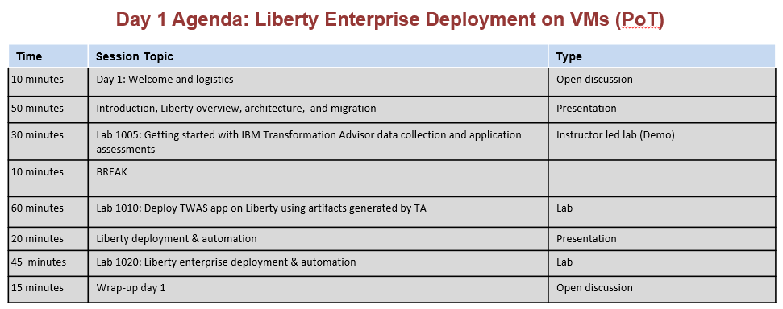
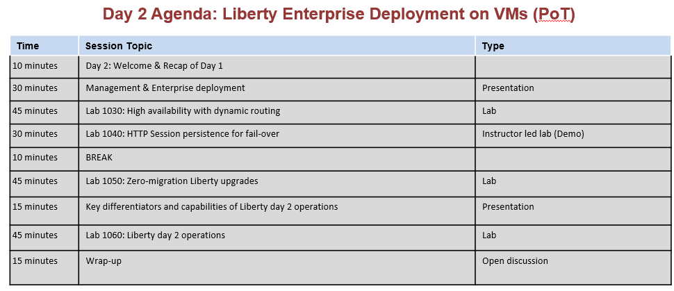
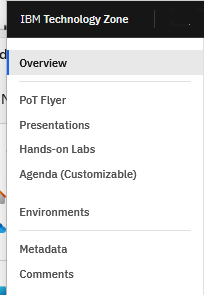

Advanced Liberty Tech Jam - Enterprise Deployments on VMs
Wednesday, March 6 2024 - (1/2 day)
Thursday March 7 2024 - (1/2 day)
Time: 9:00 AM - 1:00 PM (Singapore time)
Time: 8:00 PM - 12:00 AM (US Eastern time)
Webex meeting link: https://ec.yourlearning.ibm.com/w3/join/meeting/10415826
Slack channel name: websphere-liberty-deployment-techjam-oct2023
Slack channel link: https://ibm-cloudpak-partners.slack.com/archives/C060Z5RBBHB
- This is a full day technical workshop, delivered in two, half day sessions.
- Refer to the Workshop labs menu item from the left-navigation section to access the labs an environment.
Proposed Agenda


Materail shared with attendees
Hands-on Labs
NOTE: For your reference:
The contents used in this TechJam is available in IBM TechZone for IBM and Partner access.
Yes, you can schedule your own POT with your clients, using this techncal accelerator in IBM TechZone.
Access to the presentation, lab guides, lab environment reservations, flyer, agenda is available from the POT asset.
